Gids
Restaurants in Nijmegen
Bijgewerkt op
In het kort: Nijmegen heeft ruim 300 restaurants. Ongeveer de helft zit in de binnenstad en aan de Waalkade, de rest vooral in Oost, Bottendaal, Zuid en Lent. Italiaans en Japans zijn de grootste keukens. Op deze pagina staan alle restaurants per keuken, per buurt en van A tot Z, met links naar onze gidsen over de beste restaurants in het centrum, per keuken en per gelegenheid.
Op zoek naar een restaurant in Nijmegen? Dan heb je keuze genoeg. De stad heeft ruim 300 restaurants, van eetcafés en pizzeria's tot een restaurant met een Michelinster. De meeste zitten in de binnenstad, rond de Grote Markt, de Lange Hezelstraat en het Kelfkensbos, en aan de Waalkade. Maar ook in Oost, Bottendaal en Lent eet je goed.
Op deze pagina staan alle restaurants uit onze bedrijvengids: per keuken, per buurt en van A tot Z. Daaronder staan onze gidsen met de adressen die wij aanraden, per keuken en per gelegenheid.
Restaurants in Nijmegen per keuken
In onze bedrijvengids staan 327 restaurants in Nijmegen. Hieronder staan ze per keuken, met de straat erbij. Klik op een naam voor het adres, de openingstijden en de website. Bij elke keuken staat ook onze gids met de adressen die wij aanraden.
Italiaanse restaurants (32)
Pasta, pizza uit de houtoven en antipasti. Italiaans is de grootste keuken van Nijmegen. Onze tips: Italiaanse restaurants in Nijmegen: de beste adressen.
- Bar Pasta Groesbeeksedwarsweg
- Bellissimo Van Hogendorpstraat
- Betty & Mora Italian canteen Kapittelweg
- Doppio Nijmegen Plein
- Eetcafé Nul24 Wolfskuilseweg
- Fresca van Broeckhuysenstraat
- Het Restaurant Campusbaan
- Il-pizzaiolo
- Julia's Stationsplein
- La Pineta Voorstadslaan
- Merano Lange Hezelstraat
- Nostra van Broeckhuysenstraat
- Osteria Pomodoro Pastoor van Laakstraat
- Papa Johns Pizza Molenstraat
- Paradiso van Welderenstraat
- Pasta e Fagioli Van 't Santstraat
- Pinoccio Nijmegen Molenstraat
- Pizza café DESEM Smetiusstraat
- Pizza di Valentino Waalbandijk
- Pizza Pasta Factory Plein
- Pizza Pezzo Nassausingel
- Pizzacafé Desem Waalplein
- Pizzeria Bardolino Dorpsstraat
- Pizzeria Cafetaria Emmis Archipelstraat
- Pizzeria Fifty Fifty Van Hogendorpstraat
- Pizzeria Prego Leuvensbroek
- Renato's Pizzeria Graafseweg
- Ristorante Pizzeria La Casa Passage Molenpoort
- Romagna In de Betouwstraat
- Seconda Orbit Neerbosscheweg
- Terra Rossa Bloemerstraat
- Zappa's Plein
Japanse restaurants en sushi (18)
Sushi aan tafel, all you can eat in rondes of ramen. Onze tips: Sushi in Nijmegen: de beste adressen per situatie.
- I Love Sushi Molenweg
- Izzi Vismarkt
- Kings of Ramen Hertogstraat
- Komo Sushi
- Ookini Van Welderenstraat
- Oyasushi Zwanenveld
- Saison Wijchenseweg
- Shabu Shabu Klein Mariënburg
- SHABU To Go Molukkenstraat
- Shimeiwei Sushi Truus Gelsingstraat
- Sjoesie Nijmegen Smetiusstraat
- Sumo Molenstraat
- Sushi Maison Couwenbergstraat
- Sushi Toku Hertogstraat
- Sushi Van Kai Notenlaantje
- Sushi Vega Nijmegen 🍣 Sint Jacobslaan
- Tomi Sushi & Grill Klein Mariënburg
- Yukimi japans sushi & Grill Grotestraat
Aziatische restaurants (16)
Wok, dim sum en gerechten uit heel Azië onder één dak. Onze tips: Geniet van deze Aziatische Hoogstandjes in Nijmegen.
- Asia Foodcorner Leuvensbroek
- AYA Dommer van Poldersveldtweg
- Bankoh Kaapstander
- Brass Grote Boel
- China Garden Meijhorst
- De Mandarijn
- Eazie Molenstraat
- Foe Ho Couwenbergstraat
- iWok&Go Augustijnenstraat
- Lent Plaza Griftdijk Zuid
- M.I.A. Made in Asia
- Mister Panda Goffertweg
- Orient Drive Kerkenbos
- Orient Plaza Kerkenbos
- Peking Bisschop Hamerstraat
- Restaurant Wokforgo Ziekerstraat
Chinese restaurants (6)
Van de klassieke Chinees-Indische kaart tot authentiek Chinees. Onze tips: Chinees in Nijmegen: afhalen of uit eten?.
- China Delight
- China Garden Meijhorst
- Chinees-indisch Restaurant De Roos Binnenhof
- Chinees-Indisch restaurant Lotus Oude Molenweg
- Loong Sing Groenestraat
- Wok Nijmegen Molenstraat
Thaise restaurants (4)
Curry's, pad thai en soepen met citroengras. Onze tips: Thais eten in Nijmegen: de beste Thaise restaurants.
- Baan Isaan
- BKK Thai Tweede Walstraat
- Siam Thai Palace Kelfkensbos
- Tu Thai Food Van Den Havestraat
Indonesische restaurants (4)
Rijsttafel, rendang en saté. Onze tips: Indonesisch eten in Nijmegen: 4 adressen voor rijsttafel en rendang.
- China Garden Meijhorst
- Emmy Indonesisch Specialiteiten Eethuis Prins Hendrikstraat
- Pasundan Traditional Indonesian Food Sint Jorisstraat
- Tiffin
Vietnamese en Koreaanse restaurants (3)
Pho, banh mi en Koreaanse barbecue. Onze tips: Surinaams, Vietnamees en Koreaans eten in Nijmegen.
- Kiso by Nan Bisschop Hamerstraat
- La Saigon Houtstraat
- MẮM Vietnamese Street Food Augustijnenstraat
Indiase restaurants (9)
Curry's, tandoori en veel vegetarische gerechten. Onze tips: Indiaas restaurant in Nijmegen: waar eet je Indiaas?.
- Basmati van Welderenstraat
- Bhalu Nijmegen Bloemerstraat
- China Garden Meijhorst
- Chinees-Indisch restaurant Lotus Oude Molenweg
- India Gate Molenstraat
- Indian Way Sint Jorisstraat
- Indiawalaa Sadras Grotestraat
- Little India Ridderstraat
- Veggie India Van Welderenstraat
Turkse restaurants (11)
Grill, meze en pide. Onze tips: Heerlijke Turkse Specialiteiten in Nijmegen.
- Eetcafe De Serre Van Oldenbarneveltstraat
- Eetcafé Nul24 Wolfskuilseweg
- Eethuis Anil Willemsweg
- EethuisSultan Daalseweg
- Jadda Burghardt van den Berghstraat
- Mira Arksteestraat
- Nişantaşı Marina Waalkade
- Serif Baba Koninginnelaan
- St.jacobs Oude Molenweg
- Sultan restaurant Nijmegen Koninginnelaan
- Ziyafet Molenstraat
Libanese en Midden-Oosterse restaurants (8)
Mezze, falafel en gerechten van de grill. Onze tips: Op zoek naar een Nieuwe Belevenis? Probeer Libanees Eten.
- De Sjalot Groesbeeksedwarsweg
- Eetpaleis Marhaba St. Annastraat
- Hafiza I Arend Noorduijnstraat
- Hind cooking Augustijnenstraat
- Lila Waalkade
- Lunchcafé Blixem Groesbeekseweg
- Mohabat Molenstraat
- Nook City Kitchen Ziekerstraat
Griekse restaurants (5)
Gyros, souvlaki en meze, vaak met een ouzo van het huis. Onze tips: Griekse restaurants in Nijmegen: de beste adressen.
- Corfu
- Dionysos Bloemerstraat
- Mr. Jack's Kelfkensbos
- Rhodon Bloemerstraat
- Zorba
Spaanse restaurants en tapas (4)
Tapas om te delen, paella en Spaanse wijn. Onze tips: Tapas in Nijmegen: onze 3 favorieten.
- Bodega zarzuela
- La Cubanita Groesbeeksedwarsweg
- Lume Lange Hezelstraat
- 't Zusje Lankforst
Mediterrane restaurants (6)
Gerechten uit de landen rond de Middellandse Zee.
- Arsenaal 1824 Arsenaalpoort
- Fresca van Broeckhuysenstraat
- Mi Barrio Fransestraat
- Nibbles Ganzenheuvel
- Nostra van Broeckhuysenstraat
- REX Waalplein
Franse restaurants (8)
Klassieke Franse keuken en fine dining. Onze tips: Ontdek de Franse Keuken in Nijmegen.
- Als Toen Kerkstraat
- Beau Driehuizerweg
- Bistro Flores Kelfkensbos
- Brasserie Le Duc Zwanenveld
- café Klein van Welderenstraat
- De Schat Lage Markt
- Glaswerk Hobbemastraat
- 't Sfeerhuys bij de Looimolen Looimolenweg
Mexicaanse restaurants (5)
Taco's, burrito's en margarita's. Onze tips: Mexicaans Genieten in Nijmegen – Dit Zijn de Beste Adresjes.
- Chidoz Molenstraat
- Don Pablo Hertogstraat
- Popocatepetl Nijmegen Van Welderenstraat
- Taco Mundo Augustijnenstraat
- Taqueria Clamato Kelfkensbos
Steakhouses en burgers (13)
Steaks, spareribs en burgers. Onze tips: Steak, spareribs en burgers in Nijmegen.
- Burgerme Regulierstraat
- De 4 Heeren Sint Annastraat
- De Bok
- Fat Phill's Drive-Thru Rietgraaf
- Johnny's Burger co. Waalkade
- Johnnys Burger and OTacos Smetiusstraat
- Loetje Kraanstraat
- Meet & Ribs Nijmegen Kelfkensbos
- Smokehouse de Kronenburger Lange Hezelstraat
- Van Dam BBQ Ribs & More Berg en Dalseweg
- Van Dam's Spare-rib Corner Berg En Dalseweg
- Vlees & Co Kelfkensbos
- Wally Hertogstraat
Hollandse restaurants (6)
Stamppot, schnitzels en de Hollandse pot. Onze tips: Geniet van de Hollandse Pot in Deze Nederlandse Restaurants in Nijmegen.
- De Nieuwe Winkel Gebroeders Van Limburgplein
- Het Lemke Lange Hezelstraat
- Kool houtoven café Smetiusstraat
- Proeflokaal Bregje Plein
- Stroom Vossenpelssestraat
- 't Hoogstraatje Hoogstraat
Surinaamse en Caribische restaurants (4)
Roti, broodje pom en moksi meti. Onze tips: Surinaams, Vietnamees en Koreaans eten in Nijmegen.
- Eethuisje Moqui Van Welderenstraat
- Holy Roti Willemsweg
- Rini's Houtstraat
- Swiet Famiri Molenweg
Vegetarische en vegan restaurants (3)
Restaurants waar groente de hoofdrol speelt. Onze tips: Waar kun je het best vegan uit eten in Nijmegen?.
- Crudo Postdwarsweg
- De Klinker Van Broeckhuysenstraat
- Maoz Falafel Nijmegen Grote Markt
Internationale keuken en brasserieën (22)
Een kaart met gerechten uit verschillende keukens. Fijn als niet iedereen hetzelfde wil. Onze tips: De 10 Beste Restaurants in Nijmegen Centrum.
- Bistrobar Berlin Daalseweg
- Bleeckerstreet Kelfkensbos
- Café Eten en Drinken Groesbeeksedwarsweg
- De Portier Kelfkensbos
- Grut
- In de Kazerne Molenveldlaan
- Ivory Wintersoord
- Klinkklaar Tooropstraat
- La belle excuse
- Lodewijk Berg en Dalseweg
- Manna Oranjesingel
- NACIONAL Waalkade
- Restaurant De Vereeniging Keizer Karelplein
- Stroom Vossenpelssestraat
- Tante Koosje Berg en Dalseweg
- Tiffin
- Vesters
- Villa Voorstad Marialaan
- Vurrukkulluk Heyendaalseweg
- Wereldkeuken Triavium Van Rosenburgweg
- Why Not van Welderenstraat
- Witlof Lage Markt
Restaurants per buurt
De meeste restaurants zitten in de binnenstad: 168 van de 327. Woon je in een wijk, of wil je juist buiten de drukte eten? Dan staan hieronder de restaurants per stadsdeel.
Binnenstad (168)
Rond de Grote Markt, de Lange Hezelstraat, de Molenstraat, het Kelfkensbos en Plein 1944. In de 10 beste restaurants in het centrum staan onze favorieten. Alle restaurants in de binnenstad staan hierboven per keuken en hieronder van A tot Z.
Aan de Waalkade (16)
Eten met uitzicht op de Waal en de Waalbrug. In de zomer zitten de terrassen hier vol. Meer over de kade lees je op de Waalkade in Nijmegen.
- De Firma Lage Markt
- De Gelagkamer Waalkade
- De Pannenkoekenboot Waalkade
- De Schat Lage Markt
- Dock17 Waalkade
- Grand café de Waterwolf Waalkade
- Johnny's Burger co. Waalkade
- Le Figaro Waalkade
- Lila Waalkade
- NACIONAL Waalkade
- Nişantaşı Marina Waalkade
- Ultimo Lage Markt
- Vief Waalkade
- Waalzinnig Waalkade
- WERF Bar & Diner Waalkade
- Witlof Lage Markt
Bottendaal en Altrade (20)
Achter het station en richting het Kronenburgerpark. Rustiger dan de binnenstad, met een paar echte buurtrestaurants.
- Ankara Restaurant Burghardt vd Berghstraat
- Brood Op de Plank Castellastraat
- Eetcafe De Serre Van Oldenbarneveltstraat
- Frappant Graafseweg
- Funkyfarmer.nl Leemptstraat
- Goed Volk Burghardt Van Den Berghstraat
- Hafiza I Arend Noorduijnstraat
- Het Restaurant Campusbaan
- Jadda Burghardt van den Berghstraat
- Julia's Stationsplein
- Koks & Ko Graafseweg
- M.I.A. Made in Asia
- Mercure Hotel Ontbijtbuffet Stationsplein
- Mexita Burghardt Van Den Berghstraat
- Pizzeria Chipito Burghardt Van Den Berghstraat
- Renato's Pizzeria Graafseweg
- Restaurant De Stadstuyn Graafseweg
- Saray Graafseweg
- Smullers Stationsplein
- Tiffin
Nijmegen-Oost (46)
De Groesbeekseweg, Berg en Dalseweg en Sint Annastraat. Veel kleine restaurants en eetcafés waar vooral Nijmegenaren zelf komen.
- Ararat Armeens Restaurant Sint Annastraat
- AYA Dommer van Poldersveldtweg
- Baan Isaan
- Bar Pasta Groesbeeksedwarsweg
- Beij Ons Daalsedwarsweg
- Bella Italia St. Annastraat
- Bij Babs🍷 Sint Annastraat
- Bistrobar Berlin Daalseweg
- Bodega zarzuela
- Brass Grote Boel
- Brasserie Jolie Nijmegen Daalseweg
- Buurtcafe Adriaan Koolemans Beynenstraat
- Café Eten en Drinken Groesbeeksedwarsweg
- Crudo Postdwarsweg
- De Borneo Borneostraat
- De Mandarijn
- De Sjalot Groesbeeksedwarsweg
- EethuisSultan Daalseweg
- Eetpaleis Marhaba St. Annastraat
- Emmy Indonesisch Specialiteiten Eethuis Prins Hendrikstraat
- Glaswerk Hobbemastraat
- Grut
- Il Nano Berg En Dalseweg
- In de Kazerne Molenveldlaan
- JP Vincken & Zn Daalseweg
- Klinkklaar Tooropstraat
- La belle excuse
- La Cubanita Groesbeeksedwarsweg
- Lodewijk Berg en Dalseweg
- Lunchcafé Blixem Groesbeekseweg
- Madame Liberty Vierdaagseplein
- Made by Marn Daalseweg
- Meet De Griek Van'T Santstraat
- Mi Barrio Fransestraat
- Pasta e Fagioli Van 't Santstraat
- Pizzeria Cafetaria Emmis Archipelstraat
- Plesant Van'T Santstraat
- Restaurant Waud Van 't Santstraat
- Restobar Fiftyeight Fransestraat
- SHABU To Go Molukkenstraat
- Tante Koosje Berg en Dalseweg
- Toko Oost Koolemans Beynenstraat
- Tu Thai Food Van Den Havestraat
- Van Dam BBQ Ribs & More Berg en Dalseweg
- Van Dam's Spare-rib Corner Berg En Dalseweg
- Vesters
Nijmegen-Zuid en de campus (28)
Rond het Goffertpark, de Hatertseweg en de Radboud-campus in Heyendaal.
- Beau Driehuizerweg
- Betty & Mora Italian canteen Kapittelweg
- BUUV Hazenkampseweg
- Chinees-Indisch restaurant Lotus Oude Molenweg
- De 4 Heeren Sint Annastraat
- DROOM de Boekweit Boekweitweg
- Eetcafé BUUR Deken Hensburchstraat
- Eethuis Anil Willemsweg
- Holy Roti Willemsweg
- Jan Klaassen Eetcafe Dobbelmannweg
- Komagene Nijmegen Willemsweg
- Landgoed Brakkesteyn Driehuizerweg
- Loong Sing Groenestraat
- Maltstock HQ Nimrodstraat
- Meneer Vos Winkelsteegseweg
- Mister Panda Goffertweg
- Pimpelmees Dobbelmannweg
- Plek Nijmegen Hatertseweg
- Radboud University Food & Beverage Erasmusplein
- Restaurant Flow Nijmegen Weg door Jonkerbos
- Restaurant Groenewoud Groesbeekseweg
- Robin's Gluten Free (robin's Bakery) Topaasstraat
- St.jacobs Oude Molenweg
- Sushi Vega Nijmegen 🍣 Sint Jacobslaan
- TafEllen Hatertseweg
- Valdin van Peltlaan
- Versfabriek Wezenlaan
- Vurrukkulluk Heyendaalseweg
Hatert, Dukenburg en Lindenholt (21)
Vooral bij de winkelcentra Hatert, Meijhorst, Zwanenveld en Leuvensbroek.
- Akhi's Malvert
- Asia Foodcorner Leuvensbroek
- Bellissimo Van Hogendorpstraat
- Brasserie Le Duc Zwanenveld
- China Garden Meijhorst
- Chinees-indisch Restaurant De Roos Binnenhof
- Foe Ho Couwenbergstraat
- Komo Sushi
- Orient Drive Kerkenbos
- Orient Plaza Kerkenbos
- Oyasushi Zwanenveld
- Pizzaria Burak Zwanenveld
- Pizzeria Fifty Fifty Van Hogendorpstraat
- Pizzeria Prego Leuvensbroek
- Rich Taste Tolhuis
- Saison Wijchenseweg
- Sushi Maison Couwenbergstraat
- 't Zusje Lankforst
- Taj Plaza Meijhorst
- Tasty On The Road Bijsterhuizen
- Wereldkeuken Triavium Van Rosenburgweg
Nijmegen-West (26)
Hees, Neerbosch, de Wolfskuil en het Waalfront.
- Bankoh Kaapstander
- De Achtertuin De Kolk
- De Industrie Weurtseweg
- Drive Inn Nieuwe Nonnendaalseweg
- Eetcafé Nul24 Wolfskuilseweg
- Grand-café Lindenholt St. Agnetenweg
- Hubert Winselingseweg
- I Love Sushi Molenweg
- La Pineta Voorstadslaan
- Lijn 3 Kerkstraat
- Loetje Kraanstraat
- Lunch Lovers Tweede Oude Heselaan
- New Pronto Waterstraat
- Pizza di Valentino Waalbandijk
- Pizzacafé Desem Waalplein
- Plan_A Vlietstraat
- REX Waalplein
- Seconda Orbit Neerbosscheweg
- Serif Baba Koninginnelaan
- Sultan restaurant Nijmegen Koninginnelaan
- Swiet Famiri Molenweg
- 't Sfeerhuys bij de Looimolen Looimolenweg
- Trafo Winselingseweg
- Trash'ure Taarten Cargadoorweg
- Villa Voorstad Marialaan
- Zwaantje Nijmegen Sint Agnetenweg
Lent en Oosterhout (17)
Aan de overkant van de Waal, vaak met uitzicht op de rivier of de stad.
- Alba Oranje Marieplein
- Brasserie de Altena Waaldijk
- Bregje Truus Gelsingstraat
- Cafe Eten en Drinken Lent Lentse Schoolstraat
- Fat Phill's Drive-Thru Rietgraaf
- Kipperij Nijmegen-Lent Oranje Marieplein
- Koken aan de Waal Oosterhoutsedijk
- Lent Plaza Griftdijk Zuid
- Little Yard Parallelweg
- Moeke Willem van Arenbergstraat
- Osteria Pomodoro Pastoor van Laakstraat
- Pizzeria Bardolino Dorpsstraat
- Restaurant Zijdewinde Waaldijk
- Shimeiwei Sushi Truus Gelsingstraat
- Sound&Soul foodbar Oranje Marieplein
- Stroom Vossenpelssestraat
- Sushi Van Kai Notenlaantje
Alle restaurants in Nijmegen van A tot Z
Zoek je een bepaald restaurant? Hier staan ze allemaal. Op de kaart zie je ze in de bedrijvengids bij Restaurants.
Toon alle 327 restaurants
- Akhi's Malvert
- Alba Oranje Marieplein
- Als Toen Kerkstraat
- Ankara Restaurant Burghardt vd Berghstraat
- Ararat Armeens Restaurant Sint Annastraat
- Arsenaal 1824 Arsenaalpoort
- Asia Foodcorner Leuvensbroek
- AYA Dommer van Poldersveldtweg
- Baan Isaan
- Bankoh Kaapstander
- Bar Cali Priemstraat
- Bar Pasta Groesbeeksedwarsweg
- Basmati van Welderenstraat
- Beau Driehuizerweg
- Beij Ons Daalsedwarsweg
- Bella Italia St. Annastraat
- Bellissimo Van Hogendorpstraat
- Betty & Mora Italian canteen Kapittelweg
- Bhalu Nijmegen Bloemerstraat
- Bij Babs🍷 Sint Annastraat
- Bistro Flores Kelfkensbos
- Bistrobar Berlin Daalseweg
- BKK Thai Tweede Walstraat
- Bleeckerstreet Kelfkensbos
- BLUF Nijmegen 95, Van Welderenstraat
- Bodega zarzuela
- Borboleta Lange Hezelstraat
- Brass Grote Boel
- Brasserie de Altena Waaldijk
- Brasserie Jolie Nijmegen Daalseweg
- Brasserie Le Duc Zwanenveld
- Bregje Truus Gelsingstraat
- Brood Op de Plank Castellastraat
- Brunswick Nijmegen Van der Brugghenstraat
- Burgerme Regulierstraat
- Buurtcafe Adriaan Koolemans Beynenstraat
- BUUV Hazenkampseweg
- Cafe Eten en Drinken Lent Lentse Schoolstraat
- Café De Plak Bloemerstraat
- Café Eten en Drinken Groesbeeksedwarsweg
- café Klein van Welderenstraat
- Café Van Buren Molenstraat
- Chicken Nijmegen Koningstraat
- Chidoz Molenstraat
- China Delight
- China Garden Meijhorst
- Chinees-indisch Restaurant De Roos Binnenhof
- Chinees-Indisch restaurant Lotus Oude Molenweg
- Commanderie van Sint Jan Franseplaats
- Communal By Marcus Antonius Marikenstraat
- Corfu
- Corona Tweede Walstraat Tweede Walstraat
- Crudo Postdwarsweg
- CWZ Paviljoen
- De 4 Heeren Sint Annastraat
- De Achtertuin De Kolk
- De Bok
- De Borneo Borneostraat
- De Bruijn Lunchen op de Markt Grote Markt
- De Draaibar Molenstraat
- De Dromaai Plein
- De Firma Lage Markt
- De Gelagkamer Waalkade
- De Industrie Weurtseweg
- De Klinker Van Broeckhuysenstraat
- De Mandarijn
- De Nieuwe Winkel Gebroeders Van Limburgplein
- De Pannenkoekenboot Waalkade
- De Pelgrim Foodbar Franseplaats
- De Portier Kelfkensbos
- De Schat Lage Markt
- De Serre Plein
- De Sjalot Groesbeeksedwarsweg
- De Waagh Grote Markt
- De Wit kaashandel Lange Hezelstraat
- De Witwasserij Hertogstraat
- Dionysos Bloemerstraat
- Dock17 Waalkade
- Don Pablo Hertogstraat
- Don Pedro Ridderstraat
- Doppio Nijmegen Plein
- Down Town Kannenmarkt
- Drive Inn Nieuwe Nonnendaalseweg
- DROOM de Boekweit Boekweitweg
- Eazie Molenstraat
- Eetbar Bloom Lange Hezelstraat
- Eetbar MikMak Kelfkensbos
- Eetcafe De Serre Van Oldenbarneveltstraat
- Eetcafé BUUR Deken Hensburchstraat
- Eetcafé Nul24 Wolfskuilseweg
- Eethuis Anil Willemsweg
- Eethuisje Moqui Lange Hezelstraat
- Eethuisje Moqui Van Welderenstraat
- EethuisSultan Daalseweg
- Eetpaleis Marhaba St. Annastraat
- Emmy Indonesisch Specialiteiten Eethuis Prins Hendrikstraat
- Fat Phill's Drive-Thru Rietgraaf
- Foe Ho Couwenbergstraat
- Frank's Food & Grill Hertogstraat
- Frappant Graafseweg
- Fresca van Broeckhuysenstraat
- Funkenstein Lange Hezelstraat
- Funkyfarmer.nl Leemptstraat
- Giros Hertogstraat
- Glaswerk Hobbemastraat
- Goed Volk Burghardt Van Den Berghstraat
- Grand Cafe Moenen Grote Markt
- Grand café de Waterwolf Waalkade
- Grand-café Lindenholt St. Agnetenweg
- Grut
- Hafiza I Arend Noorduijnstraat
- Het Lemke Lange Hezelstraat
- Het Restaurant Campusbaan
- Hind cooking Augustijnenstraat
- Holy Roti Willemsweg
- Hotel Credible Hertogstraat
- Hubert Winselingseweg
- Humphrey's Mariënburg
- I Love Sushi Molenweg
- Il Nano Berg En Dalseweg
- Il-pizzaiolo
- In de Kazerne Molenveldlaan
- India Gate Molenstraat
- Indiaas & Nepalees Restaurant Himalaya Kelfkensbos
- Indian Way Sint Jorisstraat
- Indiawalaa Sadras Grotestraat
- Ivory Wintersoord
- iWok&Go Augustijnenstraat
- Izzi Vismarkt
- Jadda Burghardt van den Berghstraat
- Jan Klaassen Eetcafe Dobbelmannweg
- Johnny's Burger co. Waalkade
- Johnnys Burger and OTacos Smetiusstraat
- JP Vincken & Zn Daalseweg
- Julia's Stationsplein
- KALA | Food - Atelier - Yoga Bloemerstraat
- Kaniwa Bloemerstraat
- Kings of Ramen Hertogstraat
- Kipperij Nijmegen-Lent Oranje Marieplein
- Kiso by Nan Bisschop Hamerstraat
- Klinkklaar Tooropstraat
- Koken aan de Waal Oosterhoutsedijk
- Koks & Ko Graafseweg
- Komagene Nijmegen Willemsweg
- Komo Sushi
- Kool houtoven café Smetiusstraat
- La belle excuse
- La Cubanita Groesbeeksedwarsweg
- La Pineta Voorstadslaan
- La Saigon Houtstraat
- Landgoed Brakkesteyn Driehuizerweg
- Le Figaro Waalkade
- Lent Plaza Griftdijk Zuid
- Lijn 3 Kerkstraat
- Lila Waalkade
- Little India Ridderstraat
- Little Yard Parallelweg
- Lodewijk Berg en Dalseweg
- Loetje Kraanstraat
- Loong Sing Groenestraat
- Lume Lange Hezelstraat
- Lunch Lovers Tweede Oude Heselaan
- Lunchbar de Viking Lange Hezelstraat
- Lunchcafé Blixem Groesbeekseweg
- M.I.A. Made in Asia
- Madame Liberty Vierdaagseplein
- Made by Marn Daalseweg
- Maltstock HQ Nimrodstraat
- Mama Zita's
- Manna Oranjesingel
- Maoz Falafel Nijmegen Grote Markt
- Marktzicht Grote Markt
- Meet & Ribs Nijmegen Kelfkensbos
- Meet De Griek Van'T Santstraat
- Meneer Vos Winkelsteegseweg
- Merano Lange Hezelstraat
- Mercure Hotel Ontbijtbuffet Stationsplein
- Mexita Burghardt Van Den Berghstraat
- Mi Barrio Fransestraat
- Mira Arksteestraat
- Mister Panda Goffertweg
- Moeke Willem van Arenbergstraat
- Mohabat Molenstraat
- Mr. Jack's Kelfkensbos
- MUNT saladebar In de Betouwstraat
- MẮM Vietnamese Street Food Augustijnenstraat
- NACIONAL Waalkade
- New Dutch Marikenstraat
- New Pronto Waterstraat
- Nibbles Ganzenheuvel
- Nimweegse Nuilertjes Lange Hezelstraat
- Nişantaşı Marina Waalkade
- Nolita Nijmegen Van Welderenstraat
- Nook City Kitchen Ziekerstraat
- Nostra van Broeckhuysenstraat
- Notting Hill Kelfkensbos
- Nour Tapas Nijmegen Smetiusstraat
- Ookini Van Welderenstraat
- Orient Drive Kerkenbos
- Orient Plaza Kerkenbos
- Osteria Pomodoro Pastoor van Laakstraat
- Oyasushi Zwanenveld
- Panaché Passage Molenpoort
- Papa Johns Pizza Molenstraat
- Paradiso van Welderenstraat
- Parkzicht Kelfkensbos
- Pasta e Fagioli Van 't Santstraat
- Pasundan Traditional Indonesian Food Sint Jorisstraat
- Paul Van Zoelen Hessenberg
- Peking Bisschop Hamerstraat
- Pimpelmees Dobbelmannweg
- Pinoccio Nijmegen Molenstraat
- Pizza café DESEM Smetiusstraat
- Pizza di Valentino Waalbandijk
- Pizza Pasta Factory Plein
- Pizza Pezzo Nassausingel
- Pizzacafé Desem Waalplein
- Pizzaria Burak Zwanenveld
- Pizzeria Bardolino Dorpsstraat
- Pizzeria Cafetaria Emmis Archipelstraat
- Pizzeria Chipito Burghardt Van Den Berghstraat
- Pizzeria Fifty Fifty Van Hogendorpstraat
- Pizzeria Prego Leuvensbroek
- Plan_A Vlietstraat
- Plek Nijmegen Hatertseweg
- Plesant Van'T Santstraat
- Poké Perfect In de Betouwstraat
- Popocatepetl Nijmegen Van Welderenstraat
- Proefdruk Nijmegen Kelfkensbos
- Proeflokaal Bregje Plein
- Radboud University Food & Beverage Erasmusplein
- Renato's Pizzeria Graafseweg
- Restaurant de Hemel Franseplaats
- Restaurant De Stadstuyn Graafseweg
- Restaurant De Vereeniging Keizer Karelplein
- Restaurant Flow Nijmegen Weg door Jonkerbos
- Restaurant Groenewoud Groesbeekseweg
- Restaurant Het Savarijn van der Brugghenstraat
- Restaurant Waud Van 't Santstraat
- Restaurant Wokforgo Ziekerstraat
- Restaurant Zijdewinde Waaldijk
- Restobar Fiftyeight Fransestraat
- REX Waalplein
- Rhodon Bloemerstraat
- Rich Taste Tolhuis
- Rini's Houtstraat
- Rini's Surinaams Eten Plein
- Ristorante Pizzeria La Casa Passage Molenpoort
- Robin's Gluten Free (robin's Bakery) Topaasstraat
- Romagna In de Betouwstraat
- Saison Wijchenseweg
- Saray Graafseweg
- Seconda Orbit Neerbosscheweg
- Serif Baba Koninginnelaan
- Shabu Shabu Klein Mariënburg
- SHABU To Go Molukkenstraat
- Shibui Ramen Augustijnenstraat
- Shimeiwei Sushi Truus Gelsingstraat
- Shisha House Bloemerstraat
- Shisha Lounge Giga Bijt Smetiusstraat
- Siam Thai Palace Kelfkensbos
- Sjoesie Nijmegen Smetiusstraat
- Smokehouse de Kronenburger Lange Hezelstraat
- Smullers Stationsplein
- Sound&Soul foodbar Oranje Marieplein
- St.jacobs Oude Molenweg
- STAMP. nijmegen Van Welderenstraat
- steven
- Strandpaviljoen Dushi Pastoorsdijk
- Stroom Vossenpelssestraat
- Sultan restaurant Nijmegen Koninginnelaan
- Sumo Molenstraat
- Sushi Maison Couwenbergstraat
- Sushi Toku Hertogstraat
- Sushi Van Kai Notenlaantje
- Sushi Vega Nijmegen 🍣 Sint Jacobslaan
- SushiPoint Nijmegen Bisschop Hamerstraat
- Swiet Famiri Molenweg
- 't Hoogstraatje Hoogstraat
- 't Sfeerhuys bij de Looimolen Looimolenweg
- 't Zusje Lankforst
- Taco Mundo Augustijnenstraat
- TafEllen Hatertseweg
- Taj Plaza Meijhorst
- Tante Koosje Berg en Dalseweg
- Taqueria Clamato Kelfkensbos
- Tasty On The Road Bijsterhuizen
- Terra Rossa Bloemerstraat
- Thali Express Van Welderenstraat
- The Bite Club Lange Hezelstraat
- The foodfather nijmegen Wintersoord
- The Lobby Nijmegen Mariënburg
- Tiffin
- Toko Oost Koolemans Beynenstraat
- Tomi Sushi & Grill Klein Mariënburg
- Toon Mariënburg
- Trafo Winselingseweg
- Trash'ure Taarten Cargadoorweg
- Tu Thai Food Van Den Havestraat
- Ultimo Lage Markt
- Under Construction Ziekerstraat
- Valdin van Peltlaan
- Van Dam BBQ Ribs & More Berg en Dalseweg
- Van Dam's Spare-rib Corner Berg En Dalseweg
- Veggie India Van Welderenstraat
- Versfabriek Wezenlaan
- Vesters
- Vief Waalkade
- Villa Voorstad Marialaan
- Vlees & Co Kelfkensbos
- Vof Duives Franseplaats
- Vurrukkulluk Heyendaalseweg
- Waalzinnig Waalkade
- Wally Hertogstraat
- Weerlicht Smetiusstraat
- Wereldkeuken Triavium Van Rosenburgweg
- WERF Bar & Diner Waalkade
- Why Not van Welderenstraat
- Witlof Lage Markt
- Wok Nijmegen Molenstraat
- Yoghurt Barn Nijmegen Lange Hezelstraat
- Yukimi japans sushi & Grill Grotestraat
- Zappa's Plein
- Zeezicht Marikenstraat
- Ziyafet Molenstraat
- Zorba
- Zwaantje Nijmegen Sint Agnetenweg
Onze favorieten
Geen idee waar je zin in hebt? Begin met onze toplijst van de binnenstad, of kies voor een avond exclusief dineren.

De 10 Beste Restaurants in Nijmegen Centrum
Uit eten in Nijmegen centrum? Dit zijn de 10 beste restaurants in de oudste stad van Nederland, van gezellige bistro tot sterrenrestaurant.

Exclusief dineren in Nijmegen, wat kan je verwachten?
Zin in een luxe avond uit? Lees waar je in Nijmegen exclusief kunt dineren, wat je mag verwachten en welke bijzondere restaurants de moeite waard zijn.
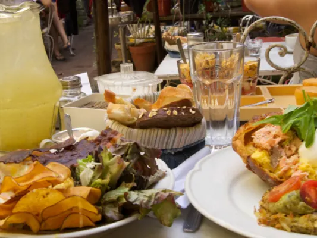
Hapje eten en drinken in Nijmegen
Een dagje Nijmegen? Hier eet en drink je lekker tussen het shoppen en wandelen door, van koffie en lunch tot borrel en diner.
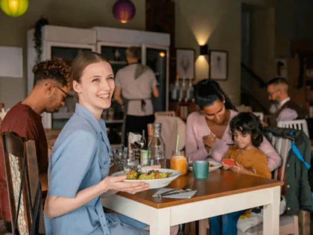
Happen & Stappen in Nijmegen – Een Wereld aan Mogelijkheden
Wandelen en onderweg eten bij de beste restaurants: zo werkt happen en stappen in Nijmegen, met routes en tips.
Onze gidsen per keuken
Van pizza en pasta tot sushi, curry en mezze: dit zijn de beste adressen per keuken.
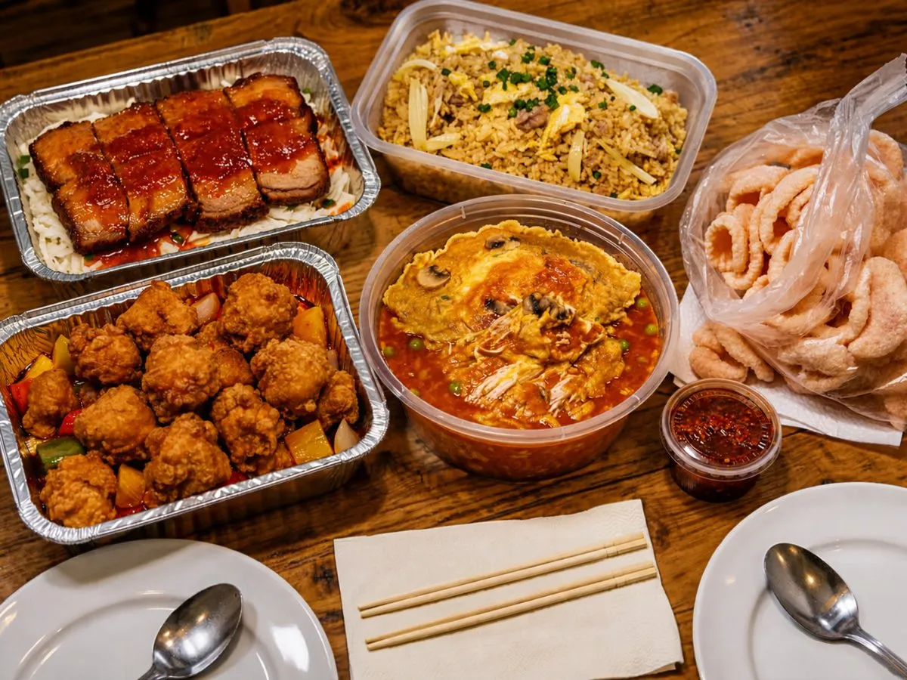
Chinees in Nijmegen: afhalen of uit eten?
Chinees eten in Nijmegen: een warm buffet in de Hertogstraat, Kantonees bij Orient Plaza, of afhalen in Oost, West, Hatert en Dukenburg. Per wijk het…
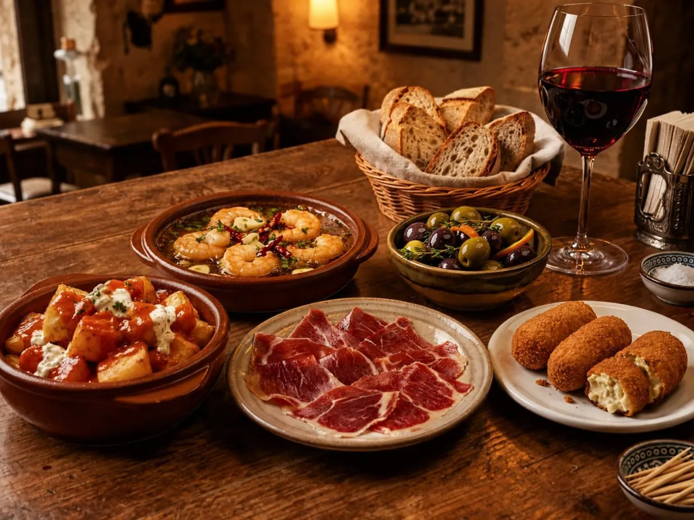
Tapas in Nijmegen: onze 3 favorieten
Tapas eten in Nijmegen? Onze 3 favorieten: onbeperkt Cubaanse tapas bij La Cubanita, bourgondisch delen bij 't Zusje in Dukenburg en Aziatische small…
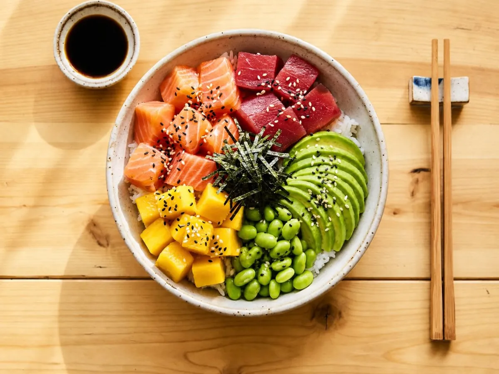
Poké bowl in Nijmegen: onze 3 favorieten
Zin in een poké bowl in Nijmegen? Onze 3 favorieten: Poké Perfect bij het station, zelf samenstellen bij Salade2Go en een bowl bij je sushi van Ookini.…
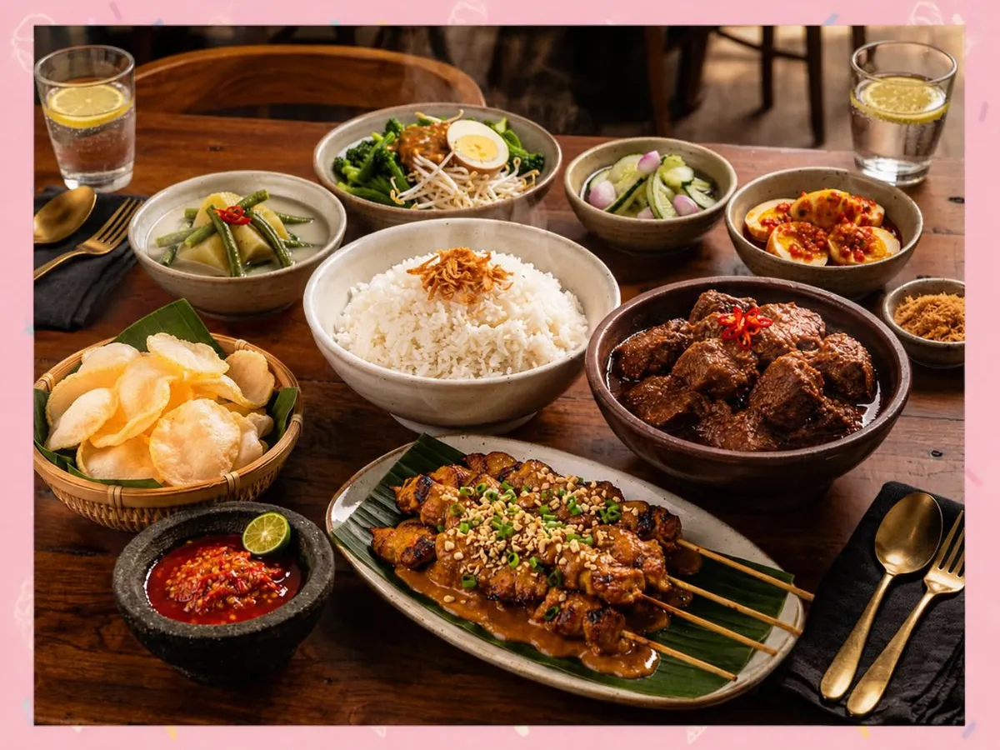
Indonesisch eten in Nijmegen: 4 adressen voor rijsttafel en rendang
Zin in een rijsttafel of rendang in Nijmegen? Onze 4 favoriete Indonesische restaurants: aan de Waal, in Bottendaal, bij het centrum en een eethuis met…
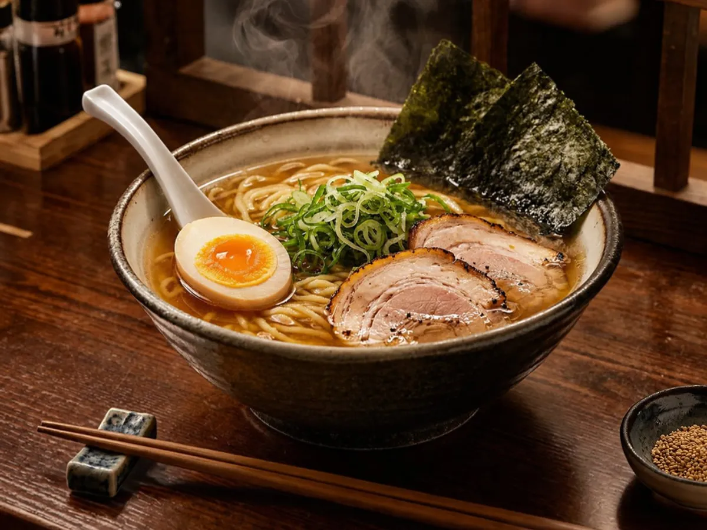
Ramen in Nijmegen: onze 3 favoriete kommen
Zin in ramen in Nijmegen? Onze 3 favorieten: een noodlebar in de Hertogstraat, Sapporo-ramen om te laten bezorgen en Koreaans-Japans bij de Bisschop…
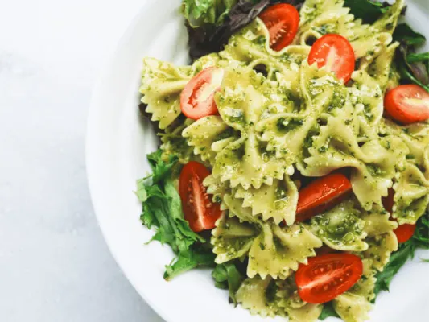
Italiaanse restaurants in Nijmegen: de beste adressen
Italiaans eten in Nijmegen: Merano sinds 1940, Pasta e Fagioli, verse pasta bij Zappa's en Bar Pasta, Romagna en onbeperkt Italiaans in Lent. Met…
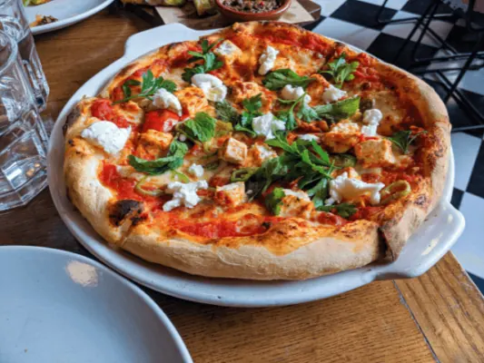
Pizza in Nijmegen: de beste pizzeria's
De lekkerste pizza in Nijmegen: zuurdesem bij Desem, Romeinse pizza bij Renato's, Pizza Pezzo, Pizza di Valentino aan de Waal en pizza bezorgen of afhalen.

Pizza bezorgen of afhalen in Nijmegen: een pizzeria in jouw wijk
Pizza laten bezorgen of afhalen in Nijmegen? Per wijk de pizzeria's om de hoek, van Oost en West tot Dukenburg, Lindenholt en Oosterhout. Met wie laat…

Thais eten in Nijmegen: de beste Thaise restaurants
Thais eten in Nijmegen: Siam Thai Palace bij het Valkhof, Tu Thai Food in Oost, BKK Thai en Mr. Thai Streetfood om te bezorgen. Adressen,…

Sushi in Nijmegen: de beste adressen per situatie
Sushi in Nijmegen: de beste adressen per situatie. Aan tafel bij iZZi aan de Waal, all you can eat bij Tomi en SUMO, en sushi bezorgen of afhalen in…
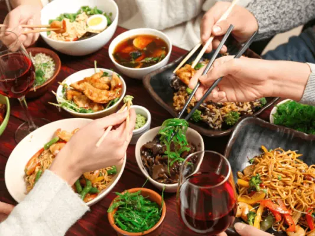
Laat je Culinair Verrassen in Chinese Sfeer
Zin in Chinees? Dit zijn de beste Chinese restaurants in Nijmegen, van vertrouwd Chinees-Indisch tot authentieke Chinese keuken.
Geniet van deze Aziatische Hoogstandjes in Nijmegen
Van curry tot noodles: dit zijn de beste Aziatische restaurants in Nijmegen, met keuze voor vegetariërs en vleeseters, in het centrum en daarbuiten.
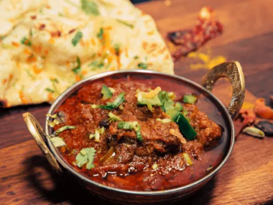
Indiaas restaurant in Nijmegen: waar eet je Indiaas?
Indiaas eten in Nijmegen: tandoori bij India Gate, Basmati en het vegetarische Veggie India in de Van Welderenstraat, en curry afhalen in Lent.…

Heerlijke Turkse Specialiteiten in Nijmegen
Zin in köfte, pide of een Turks ontbijt? Dit zijn de beste Turkse restaurants en eettentjes in Nijmegen, van Serif Baba tot Mira.
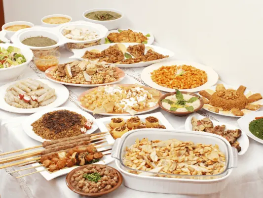
Op zoek naar een Nieuwe Belevenis? Probeer Libanees Eten
Zin in mezze, falafel of gegrild vlees op z'n Libanees? Dit zijn de beste Libanese restaurants in Nijmegen voor een verfijnde avond uit.
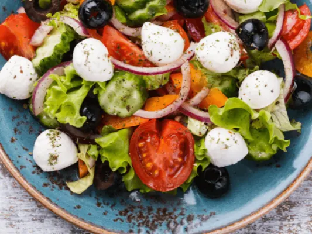
Griekse restaurants in Nijmegen: de beste adressen
Griekse restaurants in Nijmegen: Dionysos en Rhodon in de Bloemerstraat, Mr. Jack's aan het Kelfkensbos en gyros afhalen bij Giros. Adressen,…
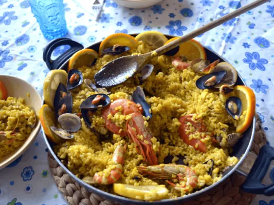
Op Zoek naar Iets Nieuws? Probeer Deze Spaanse Restaurants
Zin in paella of tapas? Dit zijn de beste Spaanse restaurants in Nijmegen voor een avond vol zuiderse smaken, met vrienden of familie.
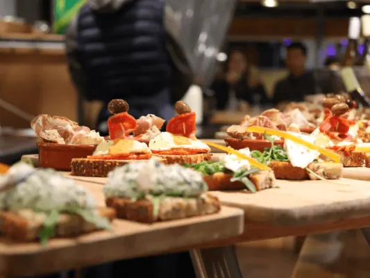
Tapas eten in Nijmegen: alle tapasrestaurants
Tapas eten in Nijmegen: onbeperkt tapas bij La Cubanita en 't Zusje, Spaans bij Bodega Zarzuela en small plates bij Eetbar Bloom en Nibbles. Adressen…
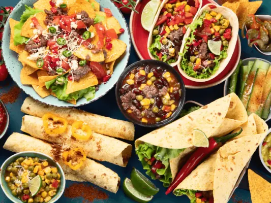
Mexicaans Genieten in Nijmegen – Dit Zijn de Beste Adresjes
Zin in taco's, burrito's of nacho's? Dit zijn de beste Mexicaanse restaurants in Nijmegen voor een avond vol pit.
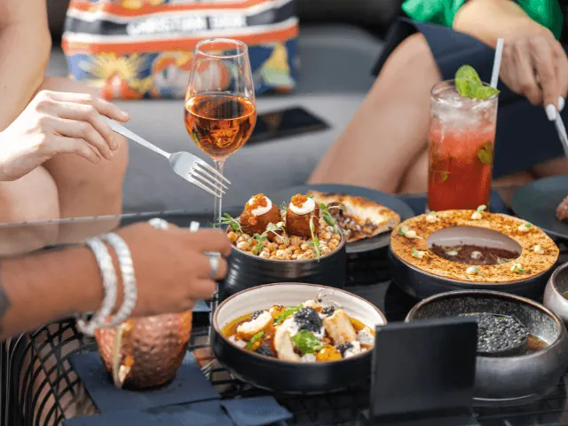
Ontdek de Franse Keuken in Nijmegen
Zin in de Franse keuken? Dit zijn de beste Franse restaurants en bistro's in Nijmegen, van klassiek tot modern.
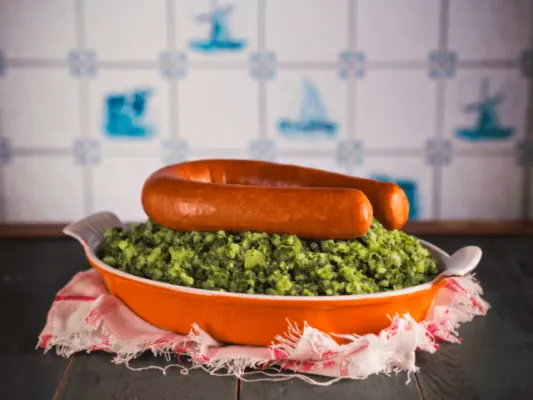
Geniet van de Hollandse Pot in Deze Nederlandse Restaurants in Nijmegen
Zin in stamppot, draadjesvlees of een goede schnitzel? Dit zijn de leukste restaurants met Hollandse kost in Nijmegen.
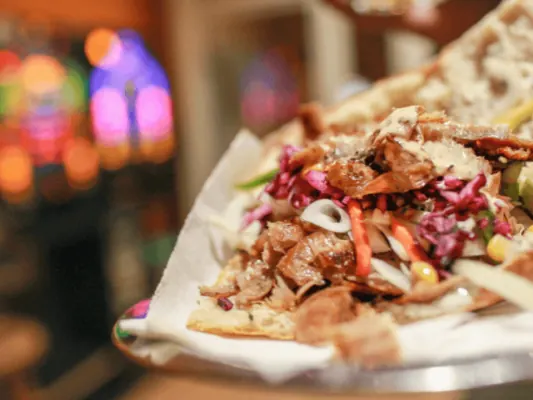
Shoarma en döner in Nijmegen: de lekkerste tentjes
Shoarma of döner in Nijmegen? De lekkerste adressen in het centrum, in Oost en West, voor een broodje, dürüm, kapsalon of grillschotel. Ook laat open…
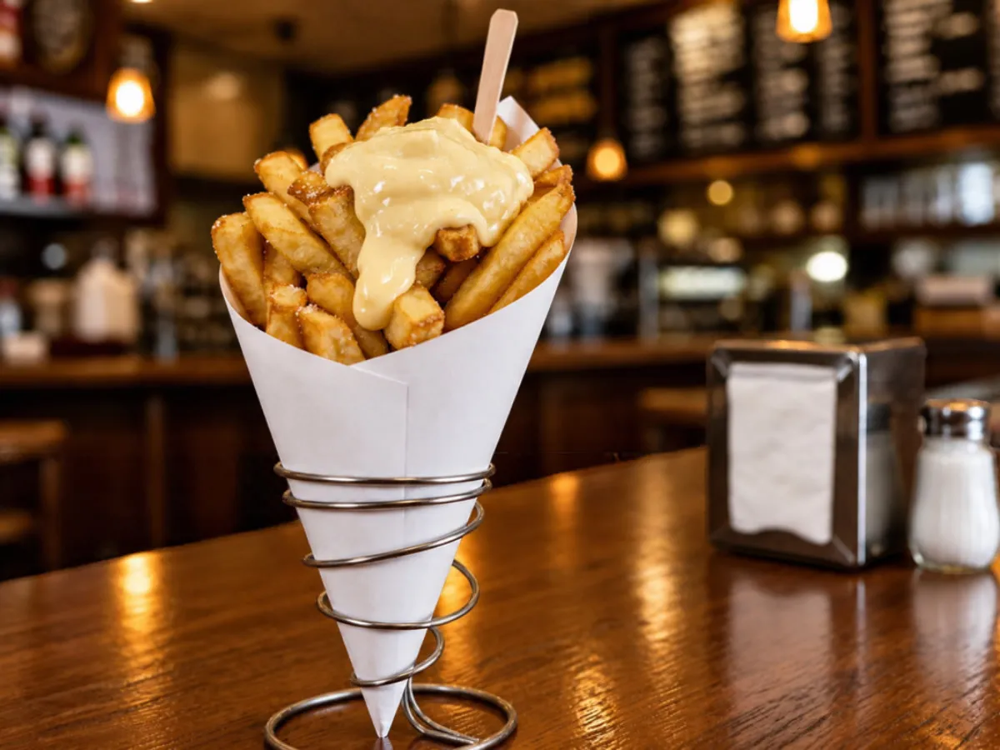
Snackbar in Nijmegen: onze top 7 voor friet en snacks
Zin in een patatje? Onze top 7 snackbars en automatieken in Nijmegen, van verse friet met toppings in het centrum tot de automatiek waar je je kroket…

Steak, spareribs en burgers in Nijmegen
Zin in een goede steak, spareribs van de houtskool of een dikke burger? De steakhouses, ribs-zaken en burgerrestaurants in Nijmegen op een rij, met wat…

Surinaams, Vietnamees en Koreaans eten in Nijmegen
Zin in roti, een kom pho of bibimbap? Hier eet of haal je Surinaams, Vietnamees en Koreaans eten in Nijmegen, met openingstijden en wie er bezorgt.
Uit eten per gelegenheid
Lunchen tijdens een dagje stad, een high tea met vriendinnen of uit eten met de kinderen: hier vind je de plekken die daar het best bij passen.
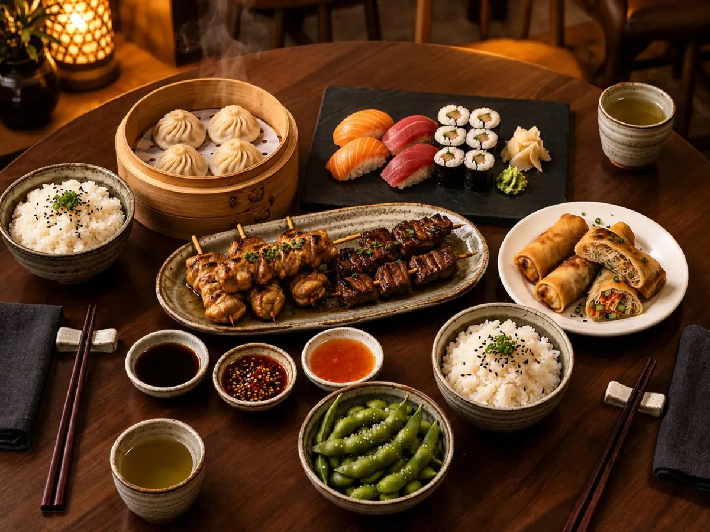
All you can eat in Nijmegen: de 5 beste restaurants
All you can eat in Nijmegen: Aziatische tapas bij Mister Panda, sushi en grill bij SUMO en Lent Plaza, de wereldkeuken bij Triavium en onbeperkt…
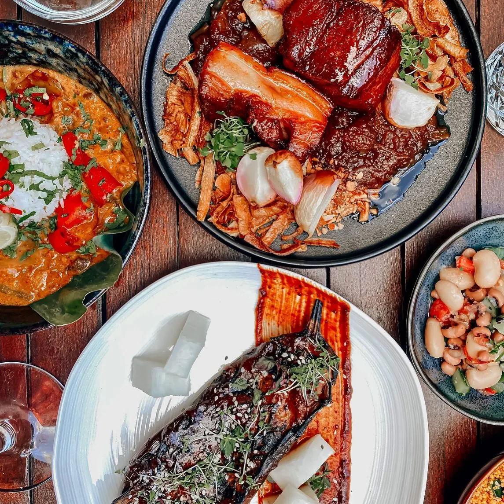
Dit zijn de 6 leukste eetcafés van Nijmegen
Lekker eten in een gezellige sfeer? Dit zijn de 6 leukste eetcafés van Nijmegen, voor een betaalbare maaltijd met een drankje erbij.

Lekker lunchen in Nijmegen, dit zijn de beste plekjes
Een dagje Nijmegen? Dit zijn de beste plekken om te lunchen in de binnenstad, van een snelle broodjeszaak tot uitgebreid lunchen met vrienden.

Op zoek naar de beste high tea locaties in Nijmegen? 5 tips!
Zin in een high tea? Dit zijn de 5 beste high tea locaties in Nijmegen, met zoete en hartige lekkernijen voor een gezellige middag.

Droom je van een high wine in Nijmegen? Dit zijn de 5 mooiste locaties
Zin in een high wine in Nijmegen? Dit zijn de 5 mooiste plekken voor wijn met bijpassende hapjes, ideaal met vriendinnen of collega's.
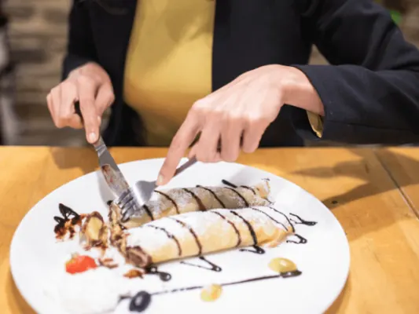
Uit eten met kinderen in Nijmegen? Deze locaties mag je niet missen
Uit eten met kleine kinderen? Dit zijn de leukste kindvriendelijke restaurants in Nijmegen, met speelhoek, kindermenu of buitenruimte.
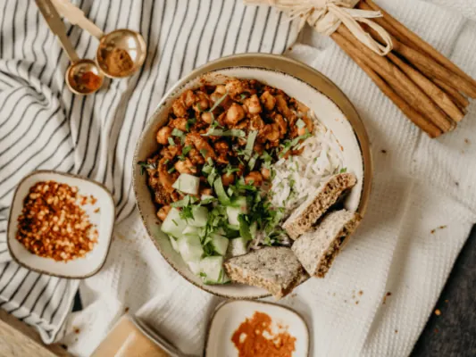
Waar kun je het best vegan uit eten in Nijmegen?
Veganistisch uit eten in Nijmegen? Dit zijn de beste vegan restaurants en plekken met een ruime plantaardige kaart, ook voor lunch.
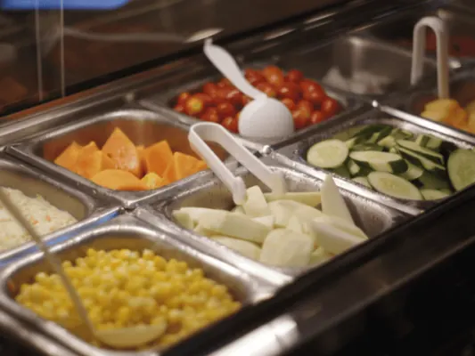
All you can eat in Nijmegen: de beste restaurants
All you can eat in Nijmegen: onbeperkt sushi en grill bij Tomi, SUMO en Saison, de wereldkeuken van Triavium, Aziatische tapas bij Mister Panda en…
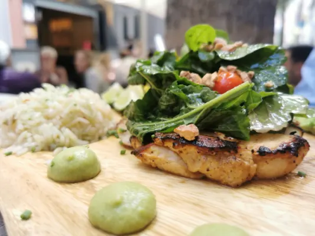
Betaalbaar uit eten in Nijmegen: zo doe je dat!
Lekker uit eten in Nijmegen zonder veel te betalen? Tips en betaalbare restaurants, van studentenmaaltijd tot dagschotel.
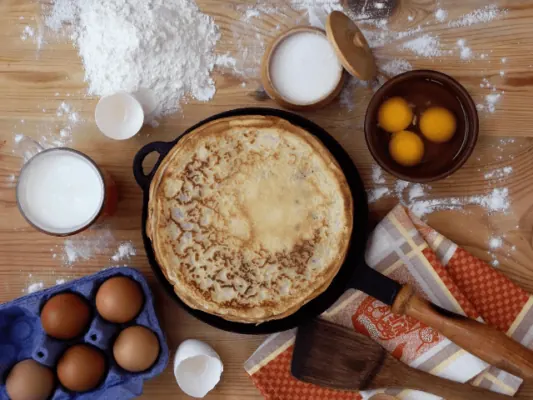
Pannenkoekenrestaurants in Nijmegen – Onze Top 5
Zin in pannenkoeken? Dit zijn de 5 leukste pannenkoekenrestaurants in Nijmegen, van 't Hoogstraatje tot plekken met een speeltuin.
Meer gidsen over dit onderwerp
Andere gidsen: eten, drinken en cultuur
Restaurants in Nijmegen
Heb je zelf een restaurant? Kom hier als partner te staan.
Veelgestelde vragen
Hoeveel restaurants heeft Nijmegen?
In onze bedrijvengids staan ruim 300 restaurants in Nijmegen, Lent en Oosterhout. Ongeveer de helft zit in de binnenstad.
Waar zitten de meeste restaurants in Nijmegen?
De meeste restaurants vind je in de binnenstad rond de Grote Markt, de Lange Hezelstraat, het Kelfkensbos en Plein 1944, en aan de Waalkade. Buiten het centrum zitten er veel in Nijmegen-Oost en Bottendaal.
Wat is een goed restaurant in het centrum van Nijmegen?
Onze favorieten in de binnenstad staan in de gids De 10 beste restaurants in Nijmegen centrum, van betaalbaar tot sterrenrestaurant.
Waar eet je met uitzicht op de Waal?
Aan de Waalkade zitten restaurants met uitzicht op de rivier en de Waalbrug. In Lent kijk je vanaf de overkant juist uit op de stad.
Moet je in Nijmegen reserveren?
Op vrijdag en zaterdag, en voor populaire of kleine restaurants, is reserveren verstandig. Doordeweeks lukt een tafel vaak ook zonder reservering.
Waar eet je goedkoop in Nijmegen?
Als studentenstad heeft Nijmegen veel betaalbare adressen. In ons artikel over betaalbaar uit eten staan tips, en ook eetcafés en all you can eat restaurants zijn vaak voordelig.